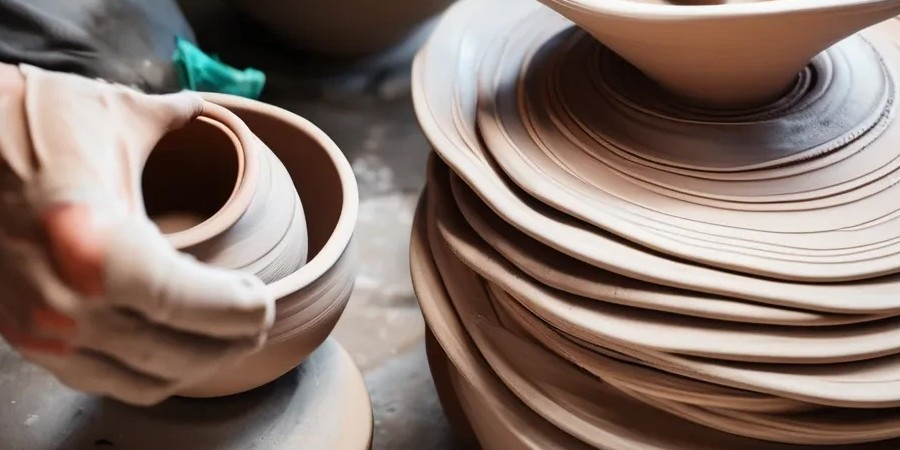
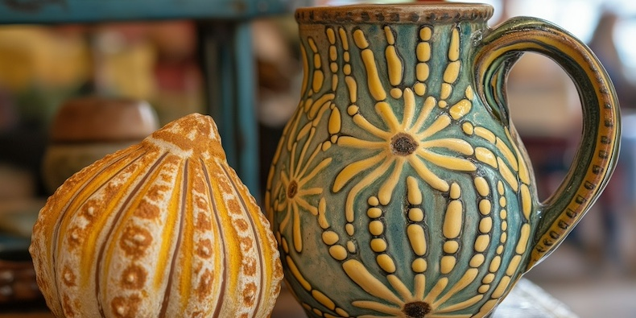
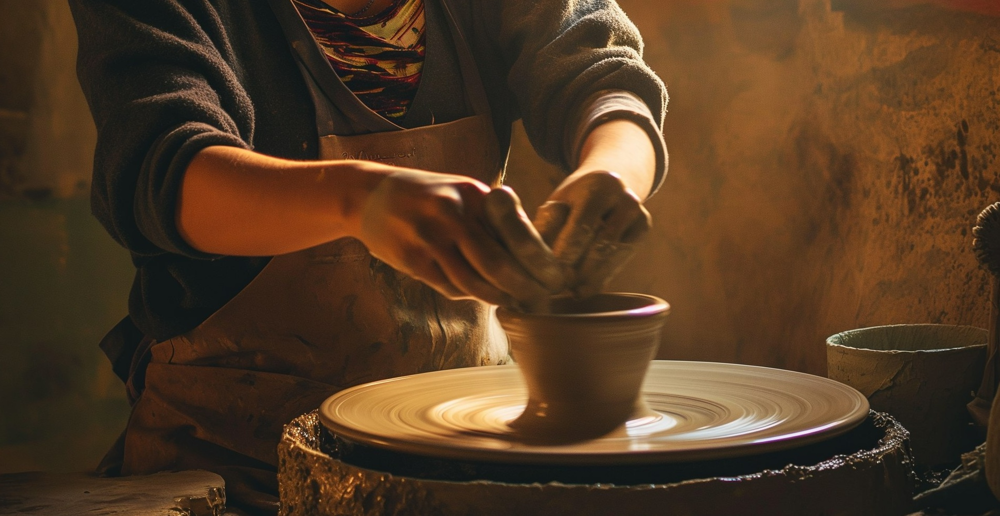

Create, shape, and bring your imagination to life with clay.

What is Pottery Making?
Pottery making is the craft of creating ceramic objects from clay and other raw materials through the process of shaping, heating, and glazing. This ancient art form has been practiced for thousands of years, evolving through different cultures and civilizations.
Learn more about the history of pottery.

Potter Stories
Get inspired by stories from fellow pottery enthusiasts.
Read about their experiences and the joy they find in pottery making. Meet
inspiring potters.

Why You'll Love Pottery Making
There are numerous benefits to taking up pottery making as a hobby. Here are a few reasons why you'll love it:
Creativity: Pottery allows you to express your artistic side. Learn about different
pottery techniques.
Mindfulness: The process is meditative and can help reduce stress. Explore the
mindfulness benefits of pottery.